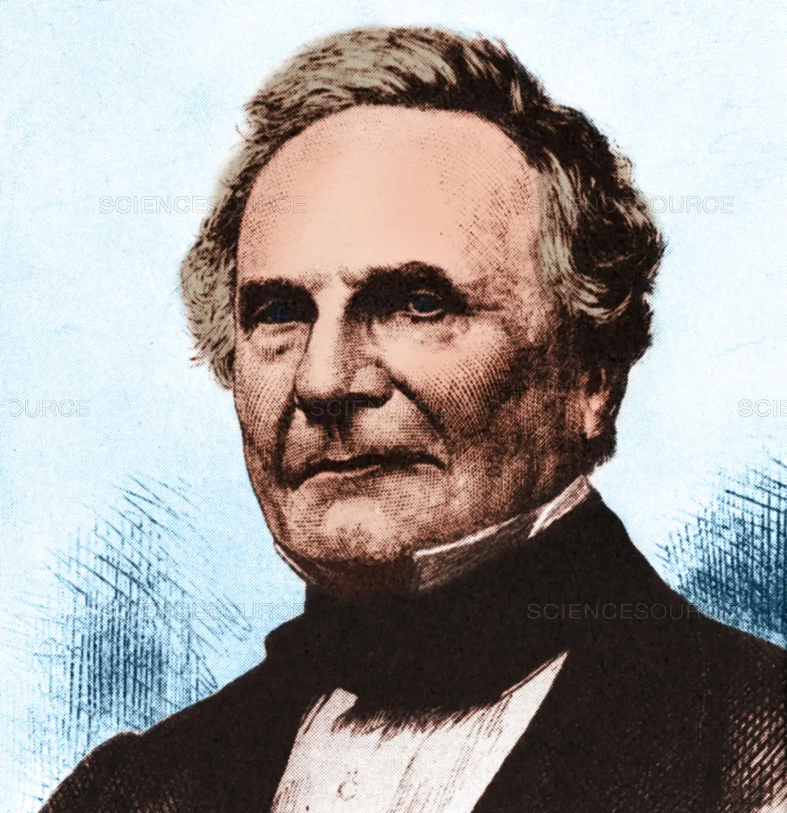

THE HALL OF FAME: Computer Science edition
Charles Babbage (1791-1871)

Back in the 19th century, 'Computers' were simply people on a desk adding and subtracting numbers on pages. Charles Babbage was one of those people, but unlike others, he had an idea worth 5000 pages, a model of an 'Analytical Engine' with a 'mill', a 'store' and a 'reader', which would become the CPU, the Memory and the Input/Output unit of the modern computer. Unfortunately, much like Arthur C. Clarke's 'Space Elevator', his ambitious ideas were simply too far-fetched as the technology back in his times were not advanced enough to make it into a reality.
Alan Turing (1912-1954)
Apart from appearing in English banknotes and the movie The Imitation Game, Turing had made significant contributions to both computing and society, such as deciphering the Enigma Code made by the Germans in 1939, designing the first electronic computer and founding the concept of Artificial Intelligence, making the Computer Science module more complicated than ever.
Leonard Kleinrock (1934-now)

Also known as 'Father of the Internet', he has also been serving as the chairman of the Computer Science Department since the 90s at the University of California at Los Angeles. He is best known for his work, the 'Queueing Theory', although first proposed by A.K. Erlang, Kleinrock was the one who applied its 'message switching' function onto the development of ARPANET, an older version of the Internet in the modern day.